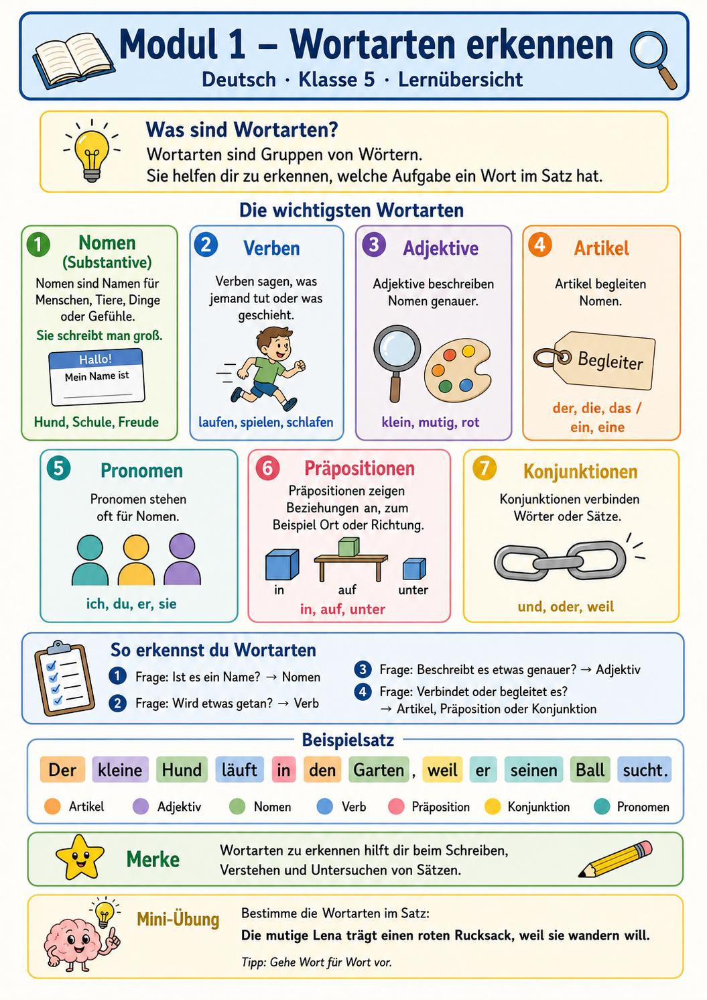

In diesem Modul lernst du, Woerter nicht nur zu benennen, sondern ihre Aufgabe im Satz zu verstehen.
Das ist die Grundlage fuer Grammatik, Rechtschreibung, Satzuntersuchung und gutes Schreiben.

Leitgrafik fuer das Modul: Die Erkennungsfragen aus der Grafik werden hier zu einer Lernstrategie ausgebaut.
Lehrplanorientiertes Lernkonzept
Vom Wort zur Funktion
Das Kerncurriculum fuer Niedersachsen verlangt fuer die Jahrgaenge 5/6, dass Wortarten fachsprachlich
richtig benannt und ihre syntaktische Funktion sowie sprachliche Leistung beschrieben werden. Deshalb
uebst du hier immer in drei Schritten: erkennen, benennen, begruenden.
1
Erkennen
Ist es ein Name, eine Handlung, eine Beschreibung oder ein Verbindungswort?
2
Benennen
Nomen, Verb, Adjektiv, Artikel, Pronomen, Praeposition oder Konjunktion?
3
Begruenden
Welche Aufgabe hat das Wort genau in diesem Satz?
4
Anwenden
Saetze untersuchen, Fehler finden und eigene passende Woerter einsetzen.
Die sieben Start-Wortarten
Wortartenkarten
Nomen / Substantiv
Namen fuer Menschen, Tiere, Dinge, Pflanzen und Gefuehle. Sie werden grossgeschrieben.
Beispiele: Hund, Schule, Freude
Frage: Wer oder was ist gemeint?
Verb
Verben sagen, was jemand tut oder was geschieht. Sie koennen ihre Form veraendern.
Beispiele: laufen, spielt, schlaeft
Frage: Was tut jemand? Was passiert?
Adjektiv
Adjektive beschreiben Nomen genauer und machen Saetze anschaulich.
Beispiele: klein, mutig, rot
Frage: Wie ist etwas?
Artikel
Artikel begleiten Nomen und zeigen oft Genus, Numerus und Kasus an.
Beispiele: der, die, das, ein, eine
Frage: Begleitet das Wort ein Nomen?
Pronomen
Pronomen stehen fuer Nomen oder begleiten sie. Klasse 5 startet mit haeufigen Formen.
Beispiele: ich, du, er, sie, mein, seinen
Frage: Ersetzt oder begleitet es ein Nomen?
Praeposition
Praepositionen zeigen Beziehungen, zum Beispiel Ort, Richtung, Zeit oder Art.
Beispiele: in, auf, unter, durch, mit
Frage: Wo? Wohin? Womit? Wann?
Konjunktion
Konjunktionen verbinden Woerter, Satzglieder oder ganze Saetze.
Beispiele: und, oder, weil, dass, wenn
Frage: Verbindet das Wort etwas?
Interaktive Lernreise
Station 1: Wortarten selbst entdecken
Waehle eine Wortart aus. Lies die Entdeckerkarte und loese direkt die kleine Frage dazu.
So merkst du dir nicht nur den Namen, sondern auch die Aufgabe der Wortart.
Entdeckerkarte
Wortart auswaehlen
Klicke oben auf eine Wortart, um mit der Station zu starten.
Mini-Check
Noch keine Frage aktiv.
Beispiel aus der Leitgrafik
Ein Satz, sieben Rollen
Tippe gedanklich jedes Wort an: Welche Rolle uebernimmt es im Satz?
Jede Runde mischt neue Saetze und Aufgabenformen. Die Aufgaben bleiben kurz, visuell und altersgemaess;
in der Profi-Stufe kommen mehr Stolperstellen dazu.
Lernkontrolle
Diagnose-Check: Kann ich Wortarten begruenden?
Der Check prueft nicht nur Einsetzroutine. Du bekommst kurze Satzkarten, Wortkarten und Begruendungsfragen.
Noch nicht gestartet.
0 / 0 richtig
Kritischer Modulcheck
Warum das Modul so zugeschnitten ist
Altersgemaess
Kurze Saetze, klare Wortkarten, wenige Fachbegriffe pro Schritt. Relativpronomen werden nur vorsichtig angebahnt.
Lehrplanpassend
Die Aufgaben verlangen Benennen und Funktionserklaerung, nicht nur Auswendiglernen von Listen.
Uebungsstark
Der Generator kombiniert sechs Aufgabenfamilien und erzeugt immer neue Runden fuer Wiederholung und Diagnose.
Bewusste Grenze
Kasus, Zeitformen und Kommasetzung werden nur beruehrt, weil sie eigene Folgemodule bekommen.